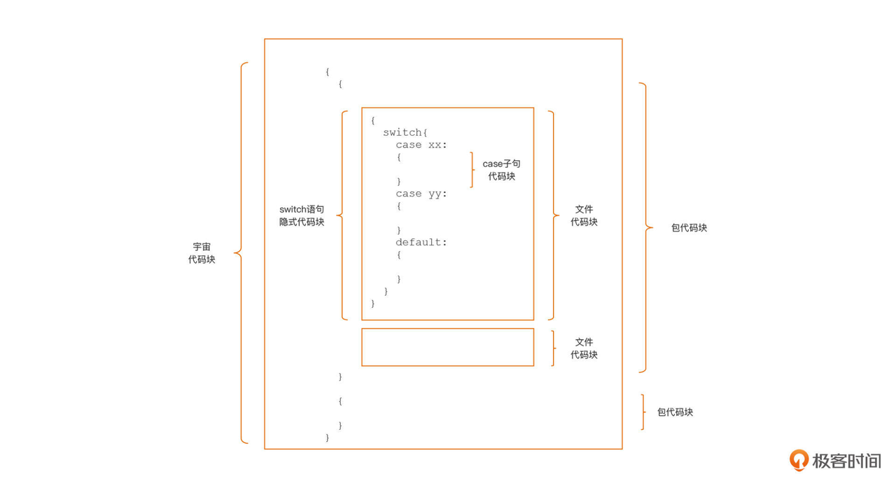
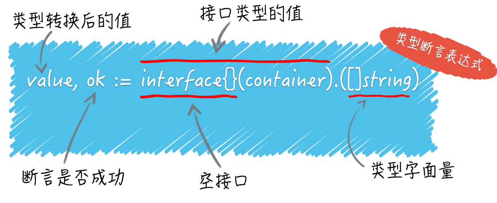
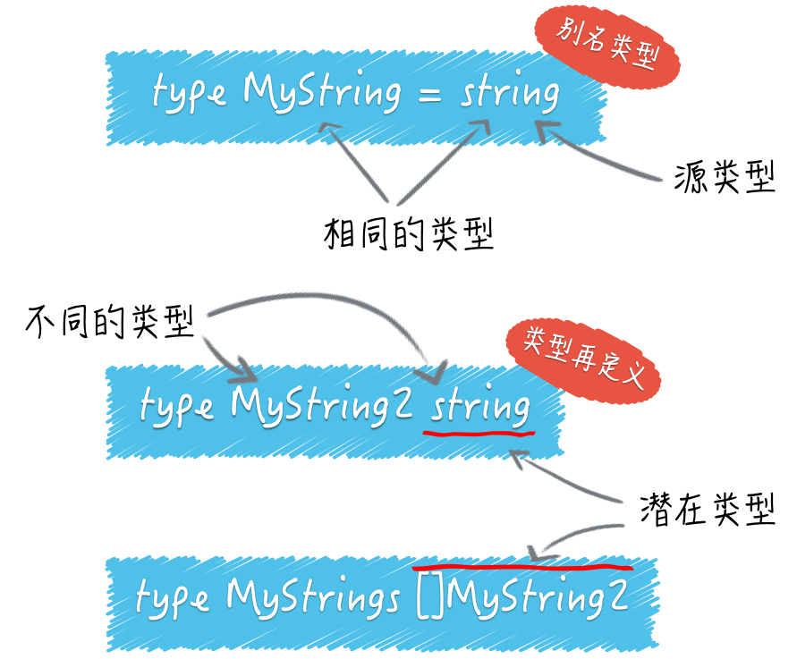

变量声明
var 声明创建一个具体类型的变量，然后给它附加一个名字，设置它的初始值。每一个声明有一个通用的形式：
var name type = expression
var age int = 18 // var 是修饰变量声明的关键字；age 是变量名；int 是该变量的类型；18是变量的初值。
var num, sum int
Go 语言的变量声明形式与其他主流静态语言有一个显著的差异，那就是 它将变量名放在了类型的前面。
类型和表达式部分可以省略一个，但是不能都省略。如果类型省略，它的类型将由初始化表达式决定；如果表达式省略，其初始值对应于类型的零值——对于数字是0，对于布尔值是false，对于字符串是“”，对于接口和引用类型（slice、指针、map、通道、函数）是nil。对于一个像数组或结构体这样的复合类型，零值是其所有元素或成员的零值。
var a int // a的初值为int类型的零值：0
Go语言的每种原生类型都有它的默认值，这个默认值就是这个类型的零值。
| 内置原生类型 | 默认值（零值） |
|---|---|
| 所有整型类型 | 0 |
| 浮点类型 | 0 |
| 布尔类型 | FALSE |
| 字符串类型 | “” |
| 指针、借口、切片、channel、map和函数类型 | nil |
除了单独声明每个变量外，Go语言还提供了变量声明块（block）的语法形式，可以用一个var关键字将多个变量声明放在一起，像下面代码这样：
var (
a int = 128
b int8 = 6
s string = "hello"
c rune = 'A'
t bool = true
)
我们通过一个var关键字声明了5个不同类型的变量。而且，Go语言还支持在一行变量声明中同时声明多个变量：
var a, b, c int = 5, 6, 7
这样的多变量声明同样也可以用在变量声明块中，像下面这样：
var (
a, b, c int = 5, 6, 7
c, d, e rune = 'C', 'D', 'E'
)
变量可以通过调用返回多个值的函数进行初始化：
var f, err = os.Open(name) // os.Open 返回一个文件和一个错误
除了上面这种通用的变量声明形式，为了给开发者带来更好的使用体验，Go语言还提供了两种变量声明的“语法糖”.
省略类型信息的声明：
在通用的变量声明的基础上，Go编译器允许我们省略变量声明中的类型信息，它的标准范式是“ var varName = initExpression”，比如下面就是一个省略了类型信息的变量声明：
var b = 13
Go 编译器会根据右侧变量初值自动推导出变量的类型，并给这个变量赋予初值所对应的默认类型。比如，整型值的默认类型int，浮点值的默认类型为float64，复数值的默认类型为complex128。其他类型值的默认类型就更好分辨了，在Go语言中仅有唯一与之对应的类型，比如布尔值的默认类型只能是bool，字符值默认类型只能是rune，字符串值的默认类型只能是string等。
如果我们不接受默认类型，而是要显式地为变量指定类型，除了通用的声明形式，我们还可以通过显式类型转型达到我们的目的：
var b = int32(13)
显然这种省略类型信息声明的“语法糖”仅 适用于在变量声明的同时显式赋予变量初值的情况，下面这种没有初值的声明形式是不被允许的：
var b
结合多变量声明，我们可以使用这种变量声明“语法糖”声明多个不同类型的变量：
var a, b, c = 12, 'A', "hello"
在这个变量声明中，我们声明了三个变量a、b和c，但它们分别具有不同的类型，分别为int、rune和string。
在这种变量声明语法糖中，我们省去了变量类型信息，但Go编译器会为我们自动推导出类型信息。还有更简化的变量声明形式,短变量声明。
短变量声明：
其实，Go语言还为我们提供了最简化的变量声明形式： 短变量声明。使用短变量声明时，我们甚至可以省去var关键字以及类型信息，它的标准范式是“varName := initExpression”。
a := 12
b := 'A'
c := "hello"
这里我们看到，短变量声明将通用变量声明中的四个部分省去了两个，但它并没有使用赋值操作符“=”，而是使用了短变量声明专用的“:=”。这个原理和上一种省略类型信息的声明语法糖一样，短变量声明中的变量类型也是由Go编译器自动推导出来的。
而且，短变量声明也支持一次声明多个变量，而且形式更为简洁，是这个样子的：
a, b, c := 12, 'A', "hello"
不过呢，短变量声明的使用也是有约束的，并不是所有变量都能用短变量声明。
一个容易被忽略但重要的地方是：短变量声明不需要声明所有在左边的变量。如果一些变量在同一个词法块中声明，那么对于那些变量，短声明的行为等同于赋值。
在如下代码中，第一条语句声明了in和err。第二条语句仅声明了out，但向已有的err变量赋了值。
in, err := os.Open(infile)
out, err := os.Create(outfile)
在如下代码中，第一条语句声明了in和err。第二条语句仅声明了out，但向已有的err变量赋了值。
f, err := os.Open(infile)
f, err := os.Create(outfile) // 编译错误:没有新变量
第二个语句使用普通的赋值语句来修复这个错误。只有在同一个词法块中已经存在变量的情况下，短声明的行为才和赋值操作一样，外层的声明将被忽略。
补充:Go语言的类型推断可以带来哪些好处？
如果面试官问你这个问题，你应该怎样回答？
当然，在写代码时，我们通过使用Go语言的类型推断，而节省下来的键盘敲击次数几乎可以忽略不计。但它真正的好处，往往会体现在我们写代码之后的那些事情上，比如代码重构。
我们通常把不改变某个程序与外界的任何交互方式和规则，而只改变其内部实现”的代码修改方式，叫做对该程序的重构。重构的对象可以是一行代码、一个函数、一个功能模块，甚至一个软件系统。
package main
import (
"flag"
"fmt"
)
func main() {
var name = getTheFlag()
flag.Parse()
fmt.Printf("Hello, %v!\\\\n", *name)
}
func getTheFlag() *string {
return flag.String("name", "everyone", "The greeting object.")
}
我们不显式地指定变量 name 的类型，使得它可以被赋予任何类型的值。也就是说，变量 name 的类型可以在其初始化时，由其他程序动态地确定。
现在我们已经学习了至少三种变量声明形式了。这时候你可能有些犯迷糊了：这些变量声明形式是否适合所有变量呢？我到底该使用哪一种呢？别急，在揭晓答案之前，我们需要学习点预备知识： Go语言的两类变量。
通常来说，Go语言的变量可以分为两类：一类称为 包级变量(package varible)，也就是在包级别可见的变量。如果是导出变量（大写字母开头），那么这个包级变量也可以被视为全局变量；另一类则是 局部变量(local varible)，也就是Go函数或方法体内声明的变量，仅在函数或方法体内可见。而我们声明的所有变量都逃不开这两种。
有了这个预备知识，接下来我们就来分别说明一下这两类变量在声明形式选择上的方法，以及一些最佳实践。
包级变量的声明形式
首先，我先下个结论： 包级变量只能使用带有var关键字的变量声明形式，不能使用短变量声明形式，但在形式细节上可以有一定灵活度。 具体这个灵活度怎么去考虑呢？我们可以从“变量声明时是否延迟初始化”这个角度，对包级变量的声明形式进行一次分类。
第一类：声明并同时显式初始化。
先看看这个代码：
// $GOROOT/src/io/io.go
var ErrShortWrite = errors.New("short write")
var ErrShortBuffer = errors.New("short buffer")
var EOF = errors.New("EOF")
我们可以看到，这个代码块里声明的变量都是io包的包级变量。在Go标准库中，对于变量声明的同时进行显式初始化的这类包级变量，实践中多使用这种省略类型信息的“语法糖”格式：
var varName = initExpression
就像我们前面说过的那样，Go编译器会自动根据等号右侧InitExpression结果值的类型，来确定左侧声明的变量的类型，这个类型会是结果值对应类型的默认类型。
当然，如果我们不接受默认类型，而是 要显式地为包级变量指定类型，那么我们有两种方式，我这里给出了两种包级变量的声明形式的对比示例。
//第一种：
var a = 13 // 使用默认类型
var b int32 = 17 // 显式指定类型
var f float32 = 3.14 // 显式指定类型
//第二种：
var a = 13 // 使用默认类型
var b = int32(17) // 显式指定类型
var f = float32(3.14) // 显式指定类型
虽然这两种方式都是可以使用的，但从声明一致性的角度出发，Go更推荐我们使用后者，这样能统一接受默认类型和显式指定类型这两种声明形式，尤其是在将这些变量放在一个var块中声明时，你会更明显地看到这一点。
所以我们更青睐下面这样的形式：
var (
a = 13
b = int32(17)
f = float32(3.14)
)
第二类：声明但延迟初始化。
对于声明时并不立即显式初始化的包级变量，我们可以使用下面这种通用变量声明形式：
var a int32
var f float64
虽然没有显式初始化，Go语言也会让这些变量拥有初始的“零值”。如果是自定义的类型，我也建议你尽量保证它的零值是可用的。
这里还有一个注意事项，就是声明聚类与就近原则。
正好，Go语言提供了 变量声明块 用来把多个的变量声明放在一起，并且在语法上也不会限制放置在var块中的声明类型，那我们就应该学会充分利用var变量声明块，让我们变量声明更规整，更具可读性，现在我们就来试试看。
通常，我们会将同一类的变量声明放在一个var变量声明块中，不同类的声明放在不同的var声明块中，比如下面就是我从标准库net包中摘取的两段变量声明代码：
// $GOROOT/src/net/net.go
var (
netGo bool
netCgo bool
)
var (
aLongTimeAgo = time.Unix(1, 0)
noDeadline = time.Time{}
noCancel = (chan struct{})(nil)
)
我们可以看到，上面这两个var声明块各自声明了一类特定用途的包级变量。那我就要问了，你还能从中看出什么包级变量声明的原则吗？
其实，我们可以将延迟初始化的变量声明放在一个var声明块(比如上面的第一个var声明块)，然后将声明且显式初始化的变量放在另一个var块中（比如上面的第二个var声明块），这里我称这种方式为 “声明聚类”，声明聚类可以提升代码可读性。
到这里，你可能还会有一个问题：我们是否应该将包级变量的声明全部集中放在源文件头部呢？答案不能一概而论。
使用静态编程语言的开发人员都知道，变量声明最佳实践中还有一条： 就近原则。也就是说我们尽可能在靠近第一次使用变量的位置声明这个变量。就近原则实际上也是对变量的作用域最小化的一种实现手段。在Go标准库中我们也很容易找到符合就近原则的变量声明的例子，比如下面这段标准库http包中的代码就是这样：
// $GOROOT/src/net/http/request.go
var ErrNoCookie = errors.New("http: named cookie not present")
func (r *Request) Cookie(name string) (*Cookie, error) {
for _, c := range readCookies(r.Header, name) {
return c, nil
}
return nil, ErrNoCookie
}
在这个代码块里，ErrNoCookie这个变量在整个包中仅仅被用在了Cookie方法中，因此它被声明在紧邻Cookie方法定义的地方。当然了，如果一个包级变量在包内部被多处使用，那么这个变量还是放在源文件头部声明比较适合的。
局部变量的声明形式
和包级变量相比，局部变量又多了一种短变量声明形式，这是局部变量特有的一种变量声明形式，也是局部变量采用最多的一种声明形式。
这里我们也从“变量声明的时候是否延迟初始化”这个角度，对本地变量的声明形式进行分类说明。
第一类：对于延迟初始化的局部变量声明，我们采用通用的变量声明形式
其实，我们之前讲过的省略类型信息的声明和短变量声明这两种“语法糖”变量声明形式都不支持变量的延迟初始化，因此对于这类局部变量，和包级变量一样，我们只能采用通用的变量声明形式：
var err error
第二类：对于声明且显式初始化的局部变量，建议使用短变量声明形式
短变量声明形式是局部变量最常用的声明形式，它遍布在Go标准库代码中。对于接受默认类型的变量，我们使用下面这种形式：
a := 17
f := 3.14
s := "hello, gopher!"
对于不接受默认类型的变量，我们依然可以使用短变量声明形式，只是在":="右侧要做一个显式转型，以保持声明的一致性：
a := int32(17)
f := float32(3.14)
s := []byte("hello, gopher!")
这里我们还要注意：尽量在分支控制时使用短变量声明形式。
分支控制应该是Go中短变量声明形式应用得最广泛的场景了。在编写Go代码时，我们很少单独声明用于分支控制语句中的变量，而是将它与if、for等控制语句通过短变量声明形式融合在一起，即在控制语句中直接声明用于控制语句代码块中的变量。
你看一下下面这个我摘自Go标准库中的代码，strings包的LastIndexAny方法为我们很好地诠释了如何将短变量声明形式与分支控制语句融合在一起使用：
// $GOROOT/src/strings/strings.go
func LastIndexAny(s, chars string) int {
if chars == "" {
// Avoid scanning all of s.
return -1
}
if len(s) > 8 {
// 作者注：在if条件控制语句中使用短变量声明形式声明了if代码块中要使用的变量as和isASCII
if as, isASCII := makeASCIISet(chars); isASCII {
for i := len(s) - 1; i >= 0; i-- {
if as.contains(s[i]) {
return i
}
}
return -1
}
}
for i := len(s); i > 0; {
// 作者注：在for循环控制语句中使用短变量声明形式声明了for代码块中要使用的变量c
r, size := utf8.DecodeLastRuneInString(s[:i])
i -= size
for _, c := range chars {
if r == c {
return i
}
}
}
return -1
}
而且，短变量声明的这种融合的使用方式也体现出“就近”原则，让变量的作用域最小化。
另外，虽然良好的函数/方法设计都讲究“单一职责”，所以每个函数/方法规模都不大，很少需要应用var块来聚类声明局部变量，但是如果你在声明局部变量时遇到了适合聚类的应用场景，你也应该毫不犹豫地使用var声明块来声明多于一个的局部变量，具体写法你可以参考Go标准库net包中resolveAddrList方法：
// $GOROOT/src/net/dial.go
func (r *Resolver) resolveAddrList(ctx context.Context, op, network,
addr string, hint Addr) (addrList, error) {
... ...
var (
tcp *TCPAddr
udp *UDPAddr
ip *IPAddr
wildcard bool
)
... ...
}
变量遮蔽
什么是变量遮蔽呢？我们来看下面这段示例代码：
var a = 11
func foo(n int) {
a := 1
a += n
}
func main() {
fmt.Println("a =", a) // 11
foo(5)
fmt.Println("after calling foo, a =", a) // 11
}
你可以看到，在这段代码中，函数foo调用前后，包级变量a的值都没有发生变化。这是因为，虽然foo函数中也使用了变量a，但是foo函数中的变量a遮蔽了外面的包级变量a，这使得包级变量a没有参与到foo函数的逻辑中，所以就没有发生变化了。
变量遮蔽是Go开发人员在日常开发工作中最容易犯的编码错误之一，它低级又不容易查找，常常会让你陷入漫长的调试过程。上面的实例较为简单，你可以通过肉眼很快找到问题所在，但一旦遇到更为复杂的变量遮蔽的问题，你就可能会被折腾很久，甚至只能通过工具才能帮助捕捉问题所在。
变量遮蔽只是个引子，我真正想跟你说的是 代码块（Block，也可译作词法块）和 作用域（Scope）这两个概念，因为要想彻底保证不出现变量遮蔽问题，我们需要深入了解这两个概念以及其背后的规则。
现在了，我们就来先学习一下代码块与作用域的概念。
代码块与作用域
我们先来解析一下Go里面的代码块。
Go语言中的代码块是包裹在一对大括号内部的声明和语句序列，如果一对大括号内部没有任何声明或其他语句，我们就把它叫做 空代码块。Go代码块支持嵌套，我们可以在一个代码块中嵌入多个层次的代码块，如下面示例代码所示：
func foo() { //代码块1
{ // 代码块2
{ // 代码块3
{ // 代码块4
}
}
}
}
在这个示例中，函数foo的函数体是最外层的代码块，这里我们将它编号为“代码块1”。而且，在它的函数体内部，又嵌套了三层代码块，由外向内看分别为代码块2、代码块3以及代码块4。
像代码块1到代码块4这样的代码块，它们都是由两个肉眼可见的且配对的大括号包裹起来的，我们称这样的代码块为显式代码块（Explicit Blocks）。既然提到了显式代码块，我们肯定也不能忽略另外一类代码块的存在，也就是隐式代码块（Implicit Block）。顾名思义，隐式代码块没有显式代码块那样的肉眼可见的配对大括号包裹，我们无法通过大括号来识别隐式代码块。
虽然隐式代码块身着“隐身衣”，但我们也不是没有方法来识别它，因为Go语言规范对现存的几类隐式代码块做了明确的定义，你可以先花一两分钟看看下面这张图。

我们按代码块范围从大到小，逐一说明一下。
首先是位于最外层的 宇宙代码块（Universe Block），它囊括的范围最大，所有Go源码都在这个隐式代码块中，你也可以将该隐式代码块想象为在所有Go代码的最外层加一对大括号，就像图中最外层的那对大括号那样。
在 宇宙代码块 内部嵌套了 包代码块（Package Block），每个Go包都对应一个隐式包代码块，每个包代码块包含了该包中的所有Go源码，不管这些代码分布在这个包里的多少个的源文件中。
我们再往里面看，在包代码块的内部嵌套着若干 文件代码块（File Block），每个Go源文件都对应着一个文件代码块，也就是说一个Go包如果有多个源文件，那么就会有多个对应的文件代码块。
再下一个级别的隐式代码块就在控制语句层面了，包括if、for与switch。我们可以把每个控制语句都视为在它自己的隐式代码块里。不过你要注意，这里的控制语句隐式代码块与控制语句使用大括号包裹的显式代码块并不是一个代码块。你再看一下前面的图，switch控制语句的隐式代码块的位置是在它显式代码块的外面的。
最后，位于最内层的隐式代码块是switch或select语句的每个case/default子句中，虽然没有大括号包裹，但实质上，每个子句都自成一个代码块。
有了这些代码块的概念后，你能更好理解作用域的概念了。作用域的概念是针对标识符的，不局限于变量。每个标识符都有自己的作用域，而 一个标识符的作用域就是指这个标识符在被声明后可以被有效使用的源码区域。
显然，作用域是一个编译期的概念，也就是说，编译器在编译过程中会对每个标识符的作用域进行检查，对于在标识符作用域外使用该标识符的行为会给出编译错误的报错。
不过，我们可以使用代码块的概念来划定每个标识符的作用域。这个划定原则是什么呢？原则就是 声明于外层代码块中的标识符，其作用域包括所有内层代码块。而且，这一原则同时适于显式代码块与隐式代码块。现在，对照上面的示意图，我们再举一些典型的例子，让你对作用域这个抽象的概念有更进一步的了解。
首先，我们来看看位于最外层的宇宙隐式代码块的标识符。
我们先来看第一个问题：我们要怎么声明这一区域的标识符呢？
这个问题的答案是，我们并不能声明这一块的标识符，因为这一区域是Go语言 预定义标识符 的自留地。这里我整理了Go语言当前版本定义里的所有预定义标识符，你可以看看下面这张表：
| 分类 | 标识符 |
|---|---|
| 类型 | bool、byte、complex64、complex128、error、float32、float64 |
| 类型 | int、int8、int16、int32、int64、rune、string |
| 类型 | uint、uint8、uint16、uint32、uint64、uintptr |
| 常量 | true、false、iota |
| 零值 | nil |
| 函数 | append、cap、close、complex、copy、delete、imag、len |
| 函数 | make、new、panic、print、println、real、recover |
由于这些预定义标识符位于包代码块的外层，所以它们的作用域是范围最大的，对于开发者而言，它们的作用域就是源代码中的任何位置。不过，这些预定义标识符不是关键字，我们同样可以在内层代码块中声明同名的标识符。
那现在第二个问题就来了：既然宇宙代码块里存在预定义标识符，而且宇宙代码块的下一层是包代码块，那还有哪些标识符具有包代码块级作用域呢？
答案是，包顶层声明中的常量、类型、变量或函数（不包括方法）对应的标识符的作用域是包代码块。
不过，对于作用域为包代码块的标识符，我需要你知道一个特殊情况。那就是当一个包A导入另外一个包B后，包A仅可以使用被导入包包B中的导出标识符（Exported Identifier）。
这是为什么呢？而且，什么是导出标识符呢？
按照Go语言定义，一个标识符要成为导出标识符需同时具备两个条件：一是这个标识符声明在包代码块中，或者它是一个字段名或方法名；二是它名字第一个字符是一个大写的Unicode字符。这两个条件缺一不可。
从我们前面的讲解中，你一定发现了大部分在包顶层声明的标识符都具有包代码块范围的作用域，那 还有标识符的作用域是文件代码块范围的吗？
确实不多了。但还有一个，我一说你肯定会有一种恍然大悟的感觉，它就是导入的包名。也就是说，如果一个包A有两个源文件要实现，而且这两个源文件中的代码都依赖包B中的标识符，那么这两个源文件都需要导入包B。
在源文件层面，去掉拥有包代码块作用域的标识符后，剩余的就都是一个个函数/方法的实现了。在这些函数/方法体中，标识符作用域划分原则更为简单，因为我们可以凭借肉眼可见的、配对的大括号来明确界定一个标识符的作用域范围，我们来看下面这个示例：
func (t T) M1(x int) (err error) {
// 代码块1
m := 13
// 代码块1是包含m、t、x和err三个标识符的最内部代码块
{ // 代码块2
// "代码块2"是包含类型bar标识符的最内部的那个包含代码块
type bar struct {} // 类型标识符bar的作用域始于此
{ // 代码块3
// "代码块3"是包含变量a标识符的最内部的那个包含代码块
a := 5 // a作用域开始于此
{ // 代码块4
//... ...
}
// a作用域终止于此
}
// 类型标识符bar的作用域终止于此
}
// m、t、x和err的作用域终止于此
}
上面示例中定义了类型T的一个方法M1，方法接收器(receiver)变量t、函数参数x，以及返回值变量err对应的标识符的作用域范围是M1函数体对应的显式代码块1。虽然t、x和err并没有被函数体的大括号所显式包裹，但它们属于函数定义的一部分，所以作用域依旧是代码块1。
说完了函数体外部的诸如函数参数、返回值等元素的作用域后，我们现在就来分析 函数体内部的那些语法元素。
函数内部声明的常量或变量对应的标识符的作用域范围开始于常量或变量声明语句的末尾，并终止于其最内部的那个包含块的末尾。在上述例子中，变量m、自定义类型bar以及在代码块3中声明的变量a均符合这个划分规则。
接下来，我们再看看 位于控制语句隐式代码块中的标识符的作用域划分。我们以下面这个if条件分支语句为例来分析一下：
func bar() {
if a := 1; false {
} else if b := 2; false {
} else if c := 3; false {
} else {
println(a, b, c)
}
}
这是一个复杂的“if - else if - else”条件分支语句结构，根据我们前面讲过的隐式代码块规则，我们将上面示例中隐式代码块转换为显式代码块后，会得到下面这段等价的代码：
func bar() {
{ // 等价于第一个if的隐式代码块
a := 1 // 变量a作用域始于此
if false {
} else {
{ // 等价于第一个else if的隐式代码块
b := 2 // 变量b的作用域始于此
if false {
} else {
{ // 等价于第二个else if的隐式代码块
c := 3 // 变量c作用域始于此
if false {
} else {
println(a, b, c)
}
// 变量c的作用域终止于此
}
}
// 变量b的作用域终止于此
}
}
// 变量a作用域终止于此
}
}
我们看到，经过这么一个等价转换，各个声明于if表达式中的变量的作用域就变得一目了然了。声明于不同层次的隐式代码块中的变量a、b和c的实际作用域都位于最内层的else显式代码块之外，于是在println的那个显式代码块中，变量a、b、c都是合法的，而且还保持了初始值。
好了，到这里我们已经了解代码块与作用域的概念与规则了，那么我们要怎么利用这些知识避免在实际编码中的变量遮蔽问题呢？避免变量遮蔽的原则又是什么呢？
避免变量遮蔽的原则
变量是标识符的一种，所以我们前面说的标识符的作用域规则同样适用于变量。在前面的讲述中，我们已经知道了，一个变量的作用域起始于其声明所在的代码块，并且可以一直扩展到嵌入到该代码块中的所有内层代码块，而正是这样的作用域规则，成为了滋生“变量遮蔽问题”的土壤。
变量遮蔽问题的根本原因，就是内层代码块中声明了一个与外层代码块同名且同类型的变量，这样，内层代码块中的同名变量就会替代那个外层变量，参与此层代码块内的相关计算，我们也就说内层变量遮蔽了外层同名变量。现在，我们先来看一下这个示例代码，它就存在着多种变量遮蔽的问题：
... ...
var a int = 2020
func checkYear() error {
err := errors.New("wrong year")
switch a, err := getYear(); a {
case 2020:
fmt.Println("it is", a, err)
case 2021:
fmt.Println("it is", a)
err = nil
}
fmt.Println("after check, it is", a)
return err
}
type new int
func getYear() (new, error) {
var b int16 = 2021
return new(b), nil
}
func main() {
err := checkYear()
if err != nil {
fmt.Println("call checkYear error:", err)
return
}
fmt.Println("call checkYear ok")
}
这个变量遮蔽的例子还是有点复杂的，为了讲解方便，我给代码加上了行编号。我们首先运行一下这个例子：
$go run complex.go
it is 2021
after check, it is 2020
call checkYear error: wrong year
我们可以看到，第20行定义的getYear函数返回了正确的年份(2021)，但是checkYear在结尾却输出“after check, it is 2020”，并且返回的err并非为nil，这显然是变量遮蔽的“锅”！
根据我们前面给出的变量遮蔽的根本原因，我们来“找找茬”，看看上面这段代码究竟有几处变量遮蔽问题（包括标识符遮蔽问题）。
第一个问题：遮蔽预定义标识符。
面对上面代码，我们一眼就看到了位于第18行的new，这本是Go语言的一个预定义标识符，但上面示例代码呢，却用new这个名字定义了一个新类型，于是new这个标识符就被遮蔽了。如果这个时候你在main函数下方放上下面代码：
p := new(int)
*p = 11
你就会收到Go编译器的错误提示：“type int is not an expression”，如果没有意识到new被遮蔽掉，这个提示就会让你不知所措。不过，在上面示例代码中，遮蔽new并不是示例未按预期输出结果的真实原因，我们还得继续往下看。
这时我们发现了第二个问题：遮蔽包代码块中的变量。
你看，位于第7行的switch语句在它自身的隐式代码块中，通过短变量声明形式重新声明了一个变量a，这个变量a就遮蔽了外层包代码块中的包级变量a，这就是打印“after check, it is 2020”的原因。包级变量a没有如预期那样被getYear的返回值赋值为正确的年份2021，2021被赋值给了遮蔽它的switch语句隐式代码块中的那个新声明的a。
不过，同一行里，其实还有第三个问题：遮蔽外层显式代码块中的变量。
同样还是第7行的switch语句，除了声明一个新的变量a之外，它还声明了一个名为err的变量，这个变量就遮蔽了第4行checkYear函数在显式代码块中声明的err变量，这导致第12行的nil赋值动作作用到了switch隐式代码块中的err变量上，而不是外层checkYear声明的本地变量err变量上，后者并非nil，这样checkYear虽然从getYear得到了正确的年份值，但却返回了一个错误给main函数，这直接导致了main函数打印了错误：“call checkYear error: wrong year”。
通过这个示例，我们也可以看到，短变量声明与控制语句的结合十分容易导致变量遮蔽问题，并且很不容易识别，因此在日常go代码开发中你要尤其注意两者结合使用的地方。
不过，依靠肉眼识别变量遮蔽问题终归不是长久之计，有没有工具可以帮助我们识别这类问题呢？其实是有的，下面我们就来介绍一下可以检测变量遮蔽问题的工具。
利用工具检测变量遮蔽问题
Go官方提供了go vet工具可以用于对Go源码做一系列静态检查，在Go 1.14版以前默认支持变量遮蔽检查，Go 1.14版之后，变量遮蔽检查的插件就需要我们单独安装了，安装方法如下：
$go install golang.org/x/tools/go/analysis/passes/shadow/cmd/shadow@latest
go: downloading golang.org/x/tools v0.1.5
go: downloading golang.org/x/mod v0.4.2
一旦安装成功，我们就可以通过go vet扫描代码并检查这里面有没有变量遮蔽的问题了。我们现在就来检查一下前面的示例代码，看看效果怎么样。执行检查的命令如下：
$$go vet -vettool=$$(which shadow) -strict complex.go
./complex.go:13:12: declaration of "err" shadows declaration at line 11
我们看到，go vet只给出了err变量被遮蔽的提示，变量a以及预定义标识符new被遮蔽的情况并没有给出提示。可以看到，工具确实可以辅助检测，但也不是万能的，不能穷尽找出代码中的所有问题，所以你还是要深入理解代码块与作用域的概念，尽可能在日常编码时就主动规避掉所有遮蔽问题。
注：声明重名的变量是无法通过编译的，用短变量声明对已有变量进行重声明除外，但这只是对于同一个代码块而言的。
对于不同的代码块来说，其中的变量重名没什么大不了，照样可以通过编译。即使这些代码块有直接的嵌套关系也是如此
怎样判断一个变量的类型？
package main
import "fmt"
var container = []string{"zero", "one", "two"}
func main() {
container := map[int]string{0: "zero", 1: "one", 2: "two"}
fmt.Printf("The element is %q.\\\\n", container[1])
}
怎样在打印其中元素之前，正确判断变量 container 的类型？
典型回答
答案是使用“类型断言”表达式。具体怎么写呢？
value, ok := interface{}(container).([]string)
这里有一条赋值语句。在赋值符号的右边，是一个类型断言表达式。
它包括了用来把 container 变量的值转换为空接口值的 interface{}(container)。
以及一个用于判断前者的类型是否为切片类型 []string 的 .([]string)。
这个表达式的结果可以被赋给两个变量，在这里由 value 和 ok 代表。变量 ok 是布尔（bool）类型的，它将代表类型判断的结果， true 或 false。
如果是 true，那么被判断的值将会被自动转换为 []string 类型的值，并赋给变量 value，否则 value 将被赋予 nil（即“空”）。
顺便提一下，这里的 ok 也可以没有。也就是说，类型断言表达式的结果，可以只被赋给一个变量，在这里是 value。
但是这样的话，当判断为否时就会引发异常。
这种异常在Go语言中被叫做 panic，我把它翻译为运行时恐慌。因为它是一种在Go程序运行期间才会被抛出的异常，而“恐慌”二字是英文Panic的中文直译。
除非显式地“恢复”这种“恐慌”，否则它会使Go程序崩溃并停止。所以，在一般情况下，我们还是应该使用带 ok 变量的写法。
问题解析
正式说明一下，类型断言表达式的语法形式是 x.(T)。其中的 x 代表要被判断类型的值。这个值当下的类型必须是接口类型的，不过具体是哪个接口类型其实是无所谓的。
所以，当这里的 container 变量类型不是任何的接口类型时，我们就需要先把它转成某个接口类型的值。
如果 container 是某个接口类型的，那么这个类型断言表达式就可以是 container.([]string)。这样看是不是清晰一些了？
在Go语言中， interface{} 代表空接口，任何类型都是它的实现类型。
这里的具体语法是 interface{}(x)，例如前面展示的 interface{}(container)。
你可能会对这里的 {} 产生疑惑，为什么在关键字 interface 的右边还要加上这个东西？
请记住，一对不包裹任何东西的花括号，除了可以代表空的代码块之外，还可以用于表示不包含任何内容的数据结构（或者说数据类型）。
比如你今后肯定会遇到的 struct{}，它就代表了不包含任何字段和方法的、空的结构体类型。
而空接口 interface{} 则代表了不包含任何方法定义的、空的接口类型。
当然了，对于一些集合类的数据类型来说， {} 还可以用来表示其值不包含任何元素，比如空的切片值 []string{}，以及空的字典值 map[int]string{}。

我们再向答案的最右边看。圆括号中 []string 是一个类型字面量。所谓类型字面量，就是用来表示数据类型本身的若干个字符。
比如， string 是表示字符串类型的字面量， uint8 是表示8位无符号整数类型的字面量。
再复杂一些的就是我们刚才提到的 []string，用来表示元素类型为 string 的切片类型，以及 map[int]string，用来表示键类型为 int、值类型为 string 的字典类型。
还有更复杂的结构体类型字面量、接口类型字面量，等等。这些描述起来占用篇幅较多，我在后面再说吧。
可以看到，当前问题的答案可以只有一行代码。你可能会想，这一行代码解释起来也太复杂了吧？
千万不要为此烦恼，这其中很大一部分都是一些基本语法和概念，你只要记住它们就好了。但这也正是我要告诉你的，一小段代码可以隐藏很多细节。面试官可以由此延伸到几个方向继续提问。这有点儿像泼墨，可以迅速由点及面。
知识扩展
问题1. 你认为类型转换规则中有哪些值得注意的地方？
类型转换表达式的基本写法我已经在前面展示过了。它的语法形式是 T(x)。
其中的 x 可以是一个变量，也可以是一个代表值的字面量（比如 1.23 和 struct{}{}），还可以是一个表达式。
注意，如果是表达式，那么该表达式的结果只能是一个值，而不能是多个值。在这个上下文中， x 可以被叫做源值，它的类型就是源类型，而那个 T 代表的类型就是目标类型。
如果从源类型到目标类型的转换是不合法的，那么就会引发一个编译错误。那怎样才算合法？具体的规则可参见Go语言规范中的 转换 部分。
我们在这里要关心的，并不是那些Go语言编译器可以检测出的问题。恰恰相反，那些在编程语言层面很难检测的东西才是我们应该关注的。
很多初学者所说的陷阱（或者说坑），大都源于他们需要了解但却不了解的那些知识和技巧。因此，在这些规则中，我想抛出三个我认为很常用并且非常值得注意的知识点，提前帮你标出一些“陷阱”。
首先，对于整数类型值、整数常量之间的类型转换，原则上只要源值在目标类型的可表示范围内就是合法的。
比如，之所以 uint8(255) 可以把无类型的常量 255 转换为 uint8 类型的值，是因为 255 在\[0, 255\]的范围内。
但需要特别注意的是，源整数类型的可表示范围较大，而目标类型的可表示范围较小的情况，比如把值的类型从 int16 转换为 int8。请看下面这段代码：
var srcInt = int16(-255)
dstInt := int8(srcInt)
变量 srcInt 的值是 int16 类型的 -255，而变量 dstInt 的值是由前者转换而来的，类型是 int8。 int16 类型的可表示范围可比 int8 类型大了不少。问题是， dstInt 的值是多少？
首先你要知道，整数在Go语言以及计算机中都是以补码的形式存储的。这主要是为了简化计算机对整数的运算过程。（负数的）补码其实就是原码各位求反再加1。
比如， int16 类型的值 -255 的补码是 1111111100000001。如果我们把该值转换为 int8 类型的值，那么Go语言会把在较高位置（或者说最左边位置）上的8位二进制数直接截掉，从而得到 00000001。
又由于其最左边一位是 0，表示它是个正整数，以及正整数的补码就等于其原码，所以 dstInt 的值就是 1。
一定要记住，当整数值的类型的有效范围由宽变窄时，只需在补码形式下截掉一定数量的高位二进制数即可。
类似的快刀斩乱麻规则还有：当把一个浮点数类型的值转换为整数类型值时，前者的小数部分会被全部截掉。
第二，虽然直接把一个整数值转换为一个 string 类型的值是可行的，但值得关注的是，被转换的整数值应该可以代表一个有效的Unicode代码点，否则转换的结果将会是 "�"（仅由高亮的问号组成的字符串值）。
字符 '�' 的Unicode代码点是 U+FFFD。它是Unicode标准中定义的Replacement Character，专用于替换那些未知的、不被认可的以及无法展示的字符。
我肯定不会去问“哪个整数值转换后会得到哪个字符串”，这太变态了！但是我会写下：
string(-1)
并询问会得到什么？这可是完全不同的问题啊。由于 -1 肯定无法代表一个有效的Unicode代码点，所以得到的总会是 "�"。在实际工作中，我们在排查问题时可能会遇到 �，你需要知道这可能是由于什么引起的。
第三个知识点是关于 string 类型与各种切片类型之间的互转的。
你先要理解的是，一个值在从 string 类型向 []byte 类型转换时代表着以UTF-8编码的字符串会被拆分成零散、独立的字节。
除了与ASCII编码兼容的那部分字符集，以UTF-8编码的某个单一字节是无法代表一个字符的。
string([]byte{'\\\\xe4', '\\\\xbd', '\\\\xa0', '\\\\xe5', '\\\\xa5', '\\\\xbd'}) // 你好
比如，UTF-8编码的三个字节 \\\\xe4、 \\\\xbd 和 \\\\xa0 合在一起才能代表字符 '你'，而 \\\\xe5、 \\\\xa5 和 \\\\xbd 合在一起才能代表字符 '好'。
其次，一个值在从 string 类型向 []rune 类型转换时代表着字符串会被拆分成一个个Unicode字符。
string([]rune{'\\\\u4F60', '\\\\u597D'}) // 你好
当你真正理解了Unicode标准及其字符集和编码方案之后，上面这些内容就会显得很容易了。什么是Unicode标准？我会首先推荐你去它的 官方网站 一探究竟。
问题2\. 什么是别名类型？什么是潜在类型？
我们可以用关键字 type 声明自定义的各种类型。当然了，这些类型必须在Go语言基本类型和高级类型的范畴之内。在它们当中，有一种被叫做“别名类型”的类型。我们可以像下面这样声明它：
type MyString = string
这条声明语句表示， MyString 是 string 类型的别名类型。顾名思义，别名类型与其源类型的区别恐怕只是在名称上，它们是完全相同的。
源类型与别名类型是一对概念，是两个对立的称呼。别名类型主要是为了代码重构而存在的。更详细的信息可参见Go语言官方的文档 Proposal: Type Aliases。
Go语言内建的基本类型中就存在两个别名类型。 byte 是 uint8 的别名类型，而 rune 是 int32 的别名类型。
一定要注意，如果我这样声明：
type MyString2 string // 注意，这里没有等号。
MyString2 和 string 就是两个不同的类型了。这里的 MyString2 是一个新的类型，不同于其他任何类型。
这种方式也可以被叫做对类型的再定义。我们刚刚把 string 类型再定义成了另外一个类型 MyString2。

对于这里的类型再定义来说， string 可以被称为 MyString2 的潜在类型。潜在类型的含义是，某个类型在本质上是哪个类型。
潜在类型相同的不同类型的值之间是可以进行类型转换的。因此， MyString2 类型的值与 string 类型的值可以使用类型转换表达式进行互转。
但对于集合类的类型 []MyString2 与 []string 来说这样做却是不合法的，因为 []MyString2 与 []string 的潜在类型不同，分别是 []MyString2 和 []string。另外，即使两个不同类型的潜在类型相同，它们的值之间也不能进行判等或比较，它们的变量之间也不能赋值。